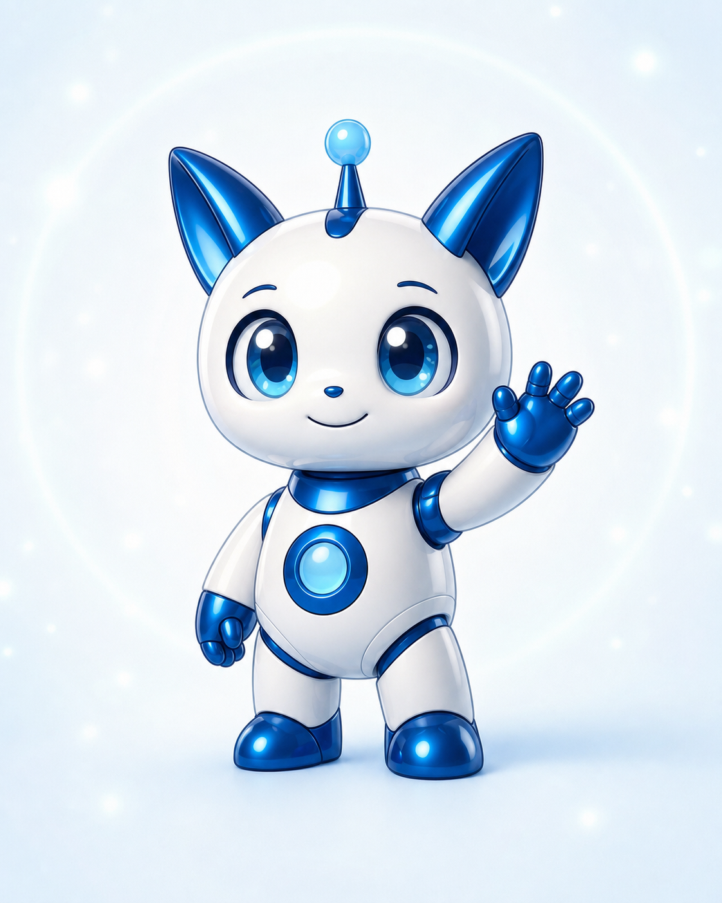
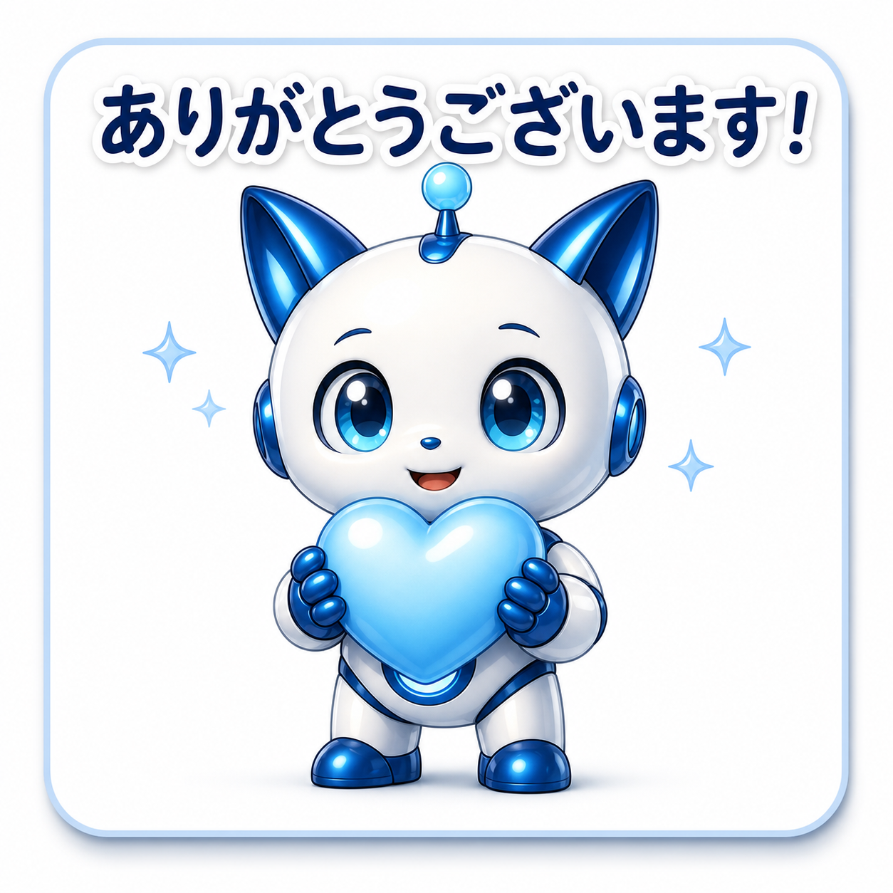
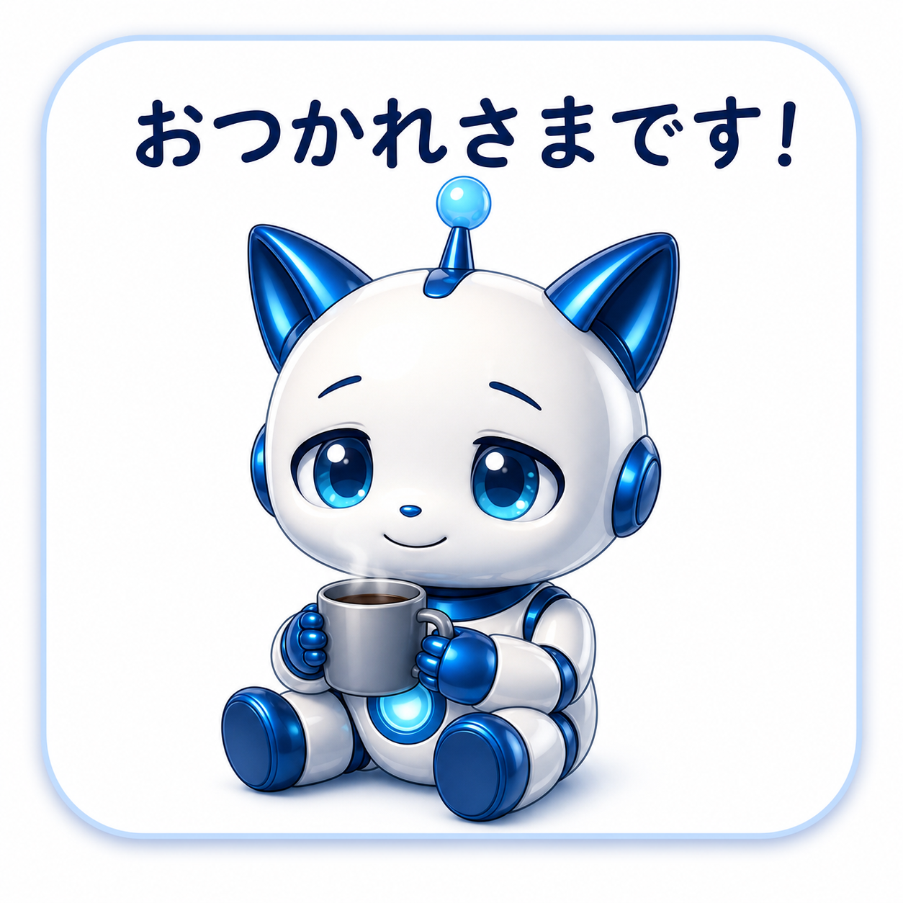
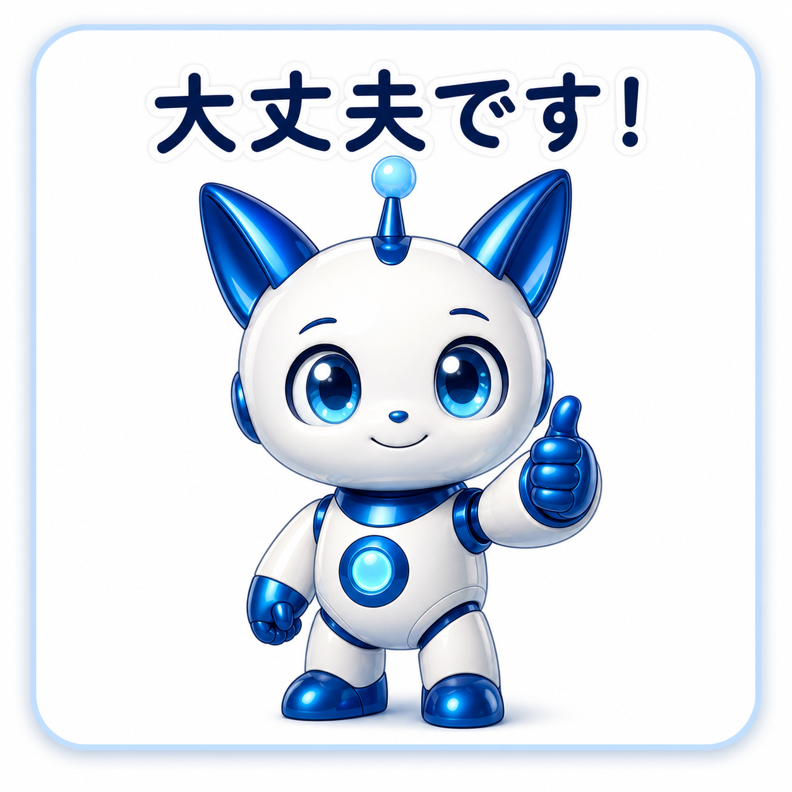
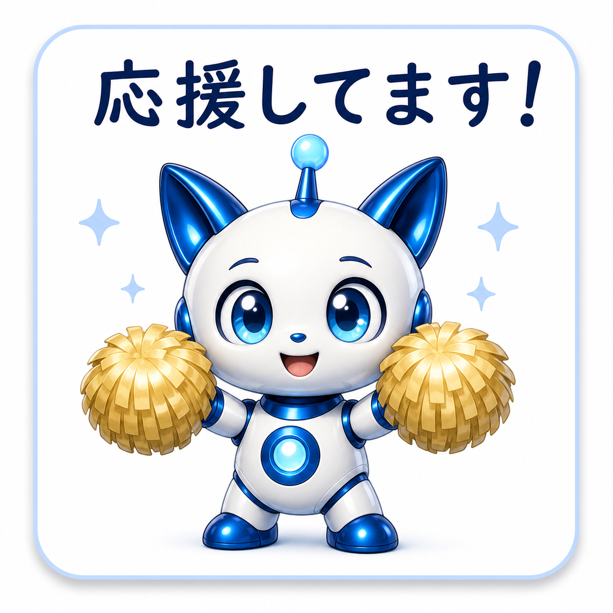
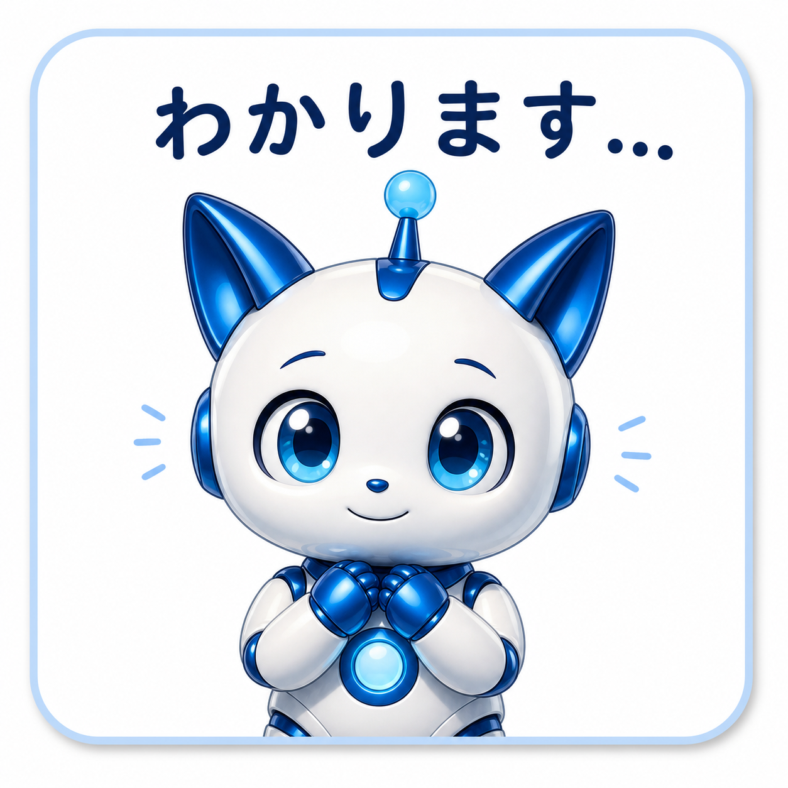

AI秘書 琥珀 LINEスタンプ
毎日のLINEに、
未来から来たやさしさを。
AI秘書「琥珀」が、ありがとう・応援・おつかれさまをやさしく届けるLINEスタンプです。
LINE 琥珀スタンプを見る
40種類セット
日常で使いやすい
新作追加予定






悩みへの共感
文字だけだと、
気持ちが少し足りない
ときがある。
ありがとうだけだと
長文にするほど
ではない
忙しいと返信が
事務的
ちょうどいい
温度感がほしい
琥珀が、
あなたの気持ちに表情を添えます。
言葉にしづらい気持ちも、琥珀の表情としぐさでやさしく伝わります。日常のLINEが、もっとあたたかく、心地よいものに。
琥珀スタンプの
特徴・強み
感謝が伝わる
ありがとうが、よりやさしく届きます。
応援しやすい
がんばって！の気持ちを軽やかに届けます。
仕事にも使える
丁寧で清潔感のある表現で、ビジネスシーンにも。
かわいいだけじゃない
未来のAI秘書らしい知性と親しさを表現。
スタンプ内容
日常のあらゆるシーンで使いやすい表現をそろえました。
感謝
褒め
共感
応援
癒し
AI秘書
リアクション
ございます！
です！
ます…
ます！
さま
しました！
今後のシリーズ展開
新しい琥珀スタンプも
追加予定
›
季節イベントや新しいシチュエーションのスタンプを、続々と追加していきます。どうぞお楽しみに！
NEW!
おすすめの方
やさしく返信したい方
相手を思いやる気持ちを、やさしく伝えたい方に。
琥珀の世界観が好きな方
未来のAI秘書「琥珀」のやさしい世界観に共感する方に。
日常でも仕事でも使いたい方
プライベートもビジネスも、幅広いシーンで使えます。
よくあるご質問（FAQ）
- スタンプは何個入っていますか？
- 全40種類のセットです。
- LINEのどのバージョンで使えますか？
- LINEアプリの最新版でご利用いただけます。
- スタンプの有効期限はありますか？
- 一度購入すると、期限なくご利用いただけます。
- 追加のスタンプは予定されていますか？
- はい、新しいスタンプを順次追加予定です。